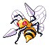
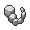
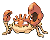
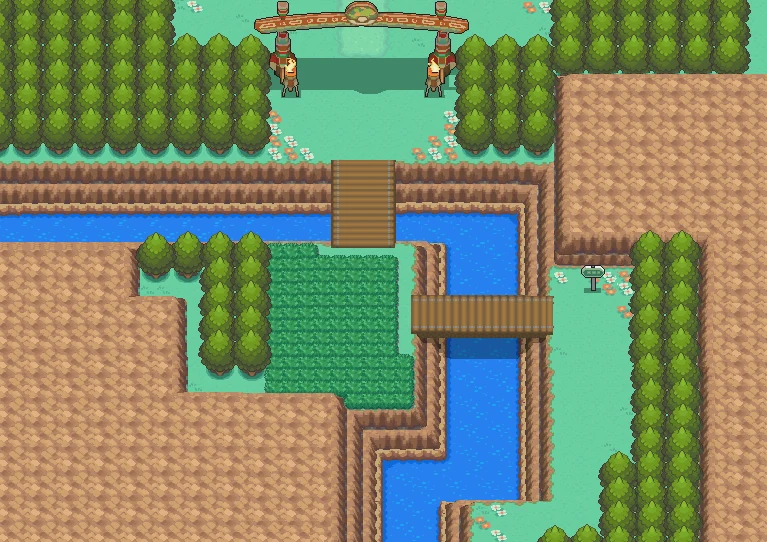
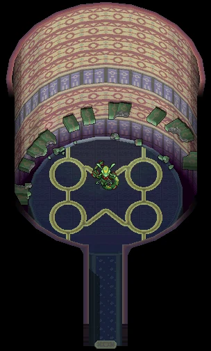
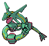

攻略大全 / 心金 / 魂银（详细图文） / 地图总览
前往狩猎地带：断崖关口、47号道路、断崖洞穴、埋没之塔、48号道路、狩猎地带
通关后
断崖关口

断崖关口是和湛蓝市同在一块陆地上的小洞窟。洞里有一个服务台，还有一张宣传新开放的狩猎地带的大海报。虽然第一次到湛蓝市时就能进来，但上层区域当时被施工人员挡住了。等你治好电龙 Amphy、浅葱市的灯塔恢复之后，施工就结束了，工人也离开了。小路往西爬上47号道路的悬崖。
| 宝可梦 | 版本 | 方式 | 等级 | 出现率 |
|---|---|---|---|---|
| 冲浪 | ||||
| 心金 / 魂银 | 冲浪 | Lv.20-30 | 90% | |
| 心金 / 魂银 | 冲浪 | Lv.30-40 | 10% | |
| 钓鱼 | ||||
| 心金 / 魂银 | 破旧钓竿 | Lv.10 | 100% | |
| 心金 / 魂银 | 好钓竿 | Lv.20 | 85% | |
| 心金 / 魂银 | 好钓竿 | Lv.20 | 15% | |
| 心金 / 魂银 | 厉害钓竿 | Lv.40 | 70% | |
| 心金 / 魂银 | 厉害钓竿 | Lv.40 | 30% | |
| 道具 | 版本 | 位置 / 获得方法 |
|---|---|---|
| 心金 / 魂银 | 水池东北边的岩石上（隐藏道具，需要攀岩、冲浪） |
再见阿四
带着靛蓝色宝珠（心金）/朱红色宝珠（魂银）来这里时，会在入口内侧遇到阿四。他马上注意到你，很惊讶你会在这里。他自言自语地猜你是不是要去埋藏之塔，并提醒你前面的路很难走，需要攀岩和冲浪。看到你连关都的道馆馆主都打败了，他意识到根本不用担心，祝你一路顺利。
↓ 下一站：47号道路
47号道路

47号道路是一条从断崖关口往西延伸的难走小路，路直接凿在悬崖上，非常险峻。上层往西北通往48号道路，下层则藏着一处叫埋藏之塔的神秘遗迹。
| 训练家 | 宝可梦 | 奖金 |
|---|---|---|
| 登山男 Devin | ₽608 | |
| 野营男 Grant | ₽336 | |
| Double Team Thom & Kae | ₽6000 | |
| Young Couple Duff & Eda | ₽2816 |
| 宝可梦 | 版本 | 方式 | 等级 | 出现率 |
|---|---|---|---|---|
| 心金 / 魂银 | 草丛 | Lv.31-33 | 5% | |
| 心金 / 魂银 | 草丛 | Lv.31 | 5% | |
| 心金 / 魂银 | 草丛 | Lv.34 | 4% | |
| 心金 / 魂银 | 草丛 | Lv.32 | 5% | |
| Farfetch'd | 心金 / 魂银 | 草丛 | Lv.35 | 早 20% · 日 20% · 夜 0% |
| 心金 / 魂银 | 草丛 | Lv.31-40 | 41% | |
| 心金 / 魂银 | 草丛 | Lv.35 | 早 0% · 日 0% · 夜 20% | |
| 心金 / 魂银 | 草丛 | Lv.35 | 20% | |
| 冲浪 | ||||
| 心金 / 魂银 | 冲浪 | Lv.15-25 | 60% | |
| 心金 / 魂银 | 冲浪 | Lv.10-20 | 30% | |
| 心金 / 魂银 | 冲浪 | Lv.15-25 | 10% | |
| 钓鱼 | ||||
| 心金 / 魂银 | 破旧钓竿 | Lv.10 | 85% | |
| 心金 / 魂银 | 破旧钓竿 | Lv.10 | 15% | |
| 心金 / 魂银 | 好钓竿 | Lv.20 | 40% | |
| 心金 / 魂银 | 好钓竿 | Lv.20 | 30% | |
| 心金 / 魂银 | 好钓竿 | Lv.20 | 20% | |
| 心金 / 魂银 | 好钓竿 | Lv.20 | 10% | |
| 心金 / 魂银 | 厉害钓竿 | Lv.40 | 40% | |
| 心金 / 魂银 | 厉害钓竿 | Lv.40 | 30% | |
| 心金 / 魂银 | 厉害钓竿 | Lv.40 | 20% | |
| 电灯怪 | 心金 / 魂银 | 厉害钓竿 | Lv.40 | 10% |
| 头锤（A 组树） | ||||
| 心金 / 魂银 | 头锤 | Lv.15-16 | 50% | |
| 心金 / 魂银 | 头锤 | Lv.15-16 | 30% | |
| 心金 / 魂银 | 头锤 | Lv.15-16 | 20% | |
| 头锤（B 组树） | ||||
| 心金 / 魂银 | 头锤 | Lv.17-18 | 50% | |
| 心金 | 头锤 | Lv.17-18 | 30% | |
| 魂银 | 头锤 | Lv.17-18 | 30% | |
| 心金 / 魂银 | 头锤 | Lv.17-18 | 20% | |
| 头锤：东边瀑布顶上最左和最右的树，以及西侧小山顶上最上面的两棵树 | ||||
| 心金 | 头锤 | Lv.25-28 | 50% | |
| 魂银 | 头锤 | Lv.25-28 | 50% | |
| 心金 | 头锤 | Lv.25-28 | 30% | |
 大针蜂 | 魂银 | 头锤 | Lv.25-28 | 30% |
| 心金 / 魂银 | 头锤 | Lv.25-28 | 15% | |
| 心金 / 魂银 | 头锤 | Lv.27-30 | 5% | |
| 大量出现 | ||||
| 心金 / 魂银 | 大量出现 | Lv.35 | 40% | |
| 特殊 | ||||
| 心金 / 魂银 | 丰缘音乐 | Lv.31-32 | 20% | |
| 心金 / 魂银 | 丰缘音乐 | Lv.33-34 | 20% | |
| 心金 / 魂银 | 神奥音乐 | Lv.31-32 | 20% | |
| 心金 / 魂银 | 神奥音乐 | Lv.33-34 | 20% | |
| 道具 | 版本 | 位置 / 获得方法 |
|---|---|---|
| 从中层过去 | ||
| 心金 / 魂银 | 两道瀑布之间，较低的悬崖上 | |
| 从下层过去 | ||
| 心金 / 魂银 | 两道瀑布之间，海滩上（隐藏道具，需要冲浪） | |
| 白色玻璃哨 | 心金 / 魂银 | 最西北的空地（需要冲浪、攀瀑） |
| 心金 / 魂银 | 西南区域，较低悬崖上一块孤零零的岩石上（隐藏道具，需要冲浪、攀岩） | |
| 涟漪薰香 | 心金 / 魂银 | 西南区域，最西边的海滩上（需要冲浪、攀岩） |
| 从上层过去 | ||
 后攻之尾 | 心金 / 魂银 | 西边瀑布上方，长满草的悬崖南端 |
中层
走出断崖关口后，你会站在道路东侧的悬崖上。往西走，在断崖洞窟入口附近和登山男 Devin 对战。附近的桥对面绕个小弯能遇到野营男 Grant，还有一个活力碎片。
断崖洞窟
断崖洞窟是一个很小的洞窟，连接这一带的三层。
| 宝可梦 | 版本 | 方式 | 等级 | 出现率 |
|---|---|---|---|---|
| 心金 / 魂银 | 洞窟 | Lv.18 | 早 0% · 日 0% · 夜 5% | |
| 心金 / 魂银 | 洞窟 | Lv.22 | 20% | |
| 心金 / 魂银 | 洞窟 | Lv.20 | 早 0% · 日 0% · 夜 4% | |
| 心金 / 魂银 | 洞窟 | Lv.19 | 10% | |
| 心金 / 魂银 | 洞窟 | Lv.22 | 4% | |
| 小拳石 | 心金 / 魂银 | 洞窟 | Lv.19 | 20% |
| 心金 / 魂银 | 洞窟 | Lv.20 | 早 4% · 日 4% · 夜 0% | |
| 心金 / 魂银 | 洞窟 | Lv.20 | 10% | |
| 心金 / 魂银 | 洞窟 | Lv.20 | 10% | |
 巨钳蟹 | 心金 / 魂银 | 洞窟 | Lv.22 | 10% |
| 心金 / 魂银 | 洞窟 | Lv.18 | 早 5% · 日 5% · 夜 0% | |
| 心金 / 魂银 | 洞窟 | Lv.20 | 早 5% · 日 5% · 夜 0% | |
| 心金 / 魂银 | 洞窟 | Lv.20 | 早 0% · 日 0% · 夜 5% | |
| 心金 / 魂银 | 洞窟 | Lv.23 | 2% | |
| 碎岩 | ||||
| 心金 / 魂银 | 碎岩 | Lv.20-26 | 80% | |
| 巨钳蟹 | 心金 / 魂银 | 碎岩 | Lv.28-31 | 20% |
| 特殊 | ||||
| 心金 / 魂银 | 丰缘音乐 | Lv.19-20 | 20% | |
| 心金 / 魂银 | 丰缘音乐 | Lv.20, 22 | 20% | |
| 心金 / 魂银 | 神奥音乐 | Lv.19-20 | 20% | |
| 铜镜怪 | 心金 / 魂银 | 神奥音乐 | Lv.20, 22 | 20% |
| 道具 | 版本 | 位置 / 获得方法 |
|---|---|---|
| 心金 / 魂银 | 3F，东南角的墙上（隐藏道具） |
2F
断崖洞窟里有两个梯子，一个往上，一个往下。
下层
下层出口在一小片海滩上。东边的瀑布通往道路上唯一的一片高草丛。西边的瀑布通往一块空地，那里有白色玻璃哨。用攀岩爬上西南边陡峭的悬崖，会找到另一个洞窟。
登山男的历史课
埋藏之塔入口外站着一个登山男。和他说话，可以了解里面隐藏的遗迹。
- 「哟，你好！据说这个洞后面以前有一座高耸入云的巨塔。听说那是一座很奇怪的塔，有一半嵌在悬崖里。它不只是一座伸向天空的高塔，还深深地伸进了地底！甚至有传言说它一直延伸到了海底！简单来说，这座遗迹以前把天空、大地和海洋连在了一起……现在塔的大部分都已经崩塌，只剩下入口和内部，里面能看到奇怪的花纹。」
埋藏之塔
地板上布满奇怪的花纹，模仿的是在里面出现的超古代宝可梦身上的图案。
对战盖欧卡
带着靛蓝色宝珠，盖欧卡就会出现在塔里。它的降雨特性会立刻招来一场持续整场对战的大雨，并提高水属性攻击的威力。喷水是威力极大的招式，但盖欧卡体力越少威力越弱；不过它可以用水流环回复体力。先用草和电属性攻击快速削减它的体力，再用火、水、冰、钢属性招式进一步削弱它。
| 宝可梦 | 详情 |
|---|---|
Lv.50 · 水 | 特性：降雨 招式：水流环、冰冻光束、原始之力、喷水 |
对战结束后，登山男走了进来。他解释说，这只传说的宝可梦出现在遥远的丰缘地区的创世故事里。他意识到埋藏之塔是丰缘的人建造的，用来把海洋、大地和天空连接在一起。那个故事里描述的宝可梦不只有盖欧卡，他怀疑遗迹里还藏着别的秘密。他建议你给大木博士看看这只超古代宝可梦，也许博士能透露更多。
对战固拉多
带着朱红色宝珠，固拉多就会出现在塔里。它的干旱特性会立刻招来持续整场对战的强烈阳光，并提高火属性攻击的威力。喷火是威力极大的招式，但固拉多体力越少威力越弱；不过它可以用睡觉回复体力。先用水、草、冰属性攻击快速削减它的体力，再用毒和岩石属性招式进一步削弱它。
| 宝可梦 | 详情 |
|---|---|
Lv.50 · 地面 | 特性：日照 招式：睡觉、地震、原始之力、喷火 |
上层
到上层后，和双人搭档 Thom & Kae 对战，过东边的桥。在西边的桥上，你会再次遇到吉宪。他听说湛蓝市附近有一道大瀑布，决定亲眼来看看。继续过桥，再过北边的小桥拿后攻之尾。往北去48号道路的路上和年轻夫妇 Duff & Eda 对战。
↓ 下一站：48号道路
48号道路

48号道路是一条短路，连接47号道路和狩猎地带入口。
| 宝可梦 | 版本 | 方式 | 等级 | 出现率 |
|---|---|---|---|---|
| 心金 / 魂银 | 草丛 | Lv.21 | 10% | |
| 魂银 | 草丛 | Lv.21-22 | 9% | |
| 魂银 | 草丛 | Lv.24 | 早 0% · 日 0% · 夜 20% | |
| 心金 / 魂银 | 草丛 | Lv.22, 24 | 20% | |
| 心金 / 魂银 | 草丛 | Lv.20 | 4% | |
| 心金 | 草丛 | Lv.21-22 | 9% | |
| 心金 | 草丛 | Lv.25 | 早 0% · 日 0% · 夜 20% | |
| Farfetch'd | 心金 | 草丛 | Lv.25 | 早 20% · 日 20% · 夜 0% |
| Farfetch'd | 魂银 | 草丛 | Lv.24 | 早 20% · 日 20% · 夜 0% |
| 心金 / 魂银 | 草丛 | Lv.20, 24 | 21% | |
| 心金 / 魂银 | 草丛 | Lv.20, 22 | 11% | |
| 心金 / 魂银 | 草丛 | Lv.20 | 5% | |
| 头锤（A 组树） | ||||
| 心金 / 魂银 | 头锤 | Lv.15-16 | 50% | |
| 心金 / 魂银 | 头锤 | Lv.15-16 | 30% | |
| 心金 / 魂银 | 头锤 | Lv.15-16 | 20% | |
| 头锤（B 组树） | ||||
| 心金 / 魂银 | 头锤 | Lv.17-18 | 50% | |
| 魂银 | 头锤 | Lv.17-18 | 30% | |
| 心金 | 头锤 | Lv.17-18 | 30% | |
| 心金 / 魂银 | 头锤 | Lv.17-18 | 20% | |
| 特殊 | ||||
| 心金 / 魂银 | 丰缘音乐 | Lv.20-21 | 20% | |
| 心金 / 魂银 | 丰缘音乐 | Lv.22, 24 | 20% | |
| 心金 / 魂银 | 神奥音乐 | Lv.20-22, 24 | 40% | |
| 道具 | 版本 | 位置 / 获得方法 |
|---|---|---|
| 心金 / 魂银 | 高草丛西边的死胡同 |
↓ 下一站：狩猎地带入口
狩猎地带入口

狩猎地带入口是一条通往狩猎地带的短路。因为这个自然保护区很受欢迎，这里出现了一个露天小市场。西南边的摊位出售各种精灵球，东南边的摊位出售各种营养剂。
| 宝可梦 | 版本 | 方式 | 等级 | 出现率 |
|---|---|---|---|---|
| 头锤（A 组树） | ||||
| 心金 / 魂银 | 头锤 | Lv.14-16 | 50% | |
| 心金 / 魂银 | 头锤 | Lv.14-16 | 30% | |
| 心金 / 魂银 | 头锤 | Lv.14-16 | 20% | |
| 头锤（B 组树） | ||||
| 心金 / 魂银 | 头锤 | Lv.17-19 | 50% | |
| 魂银 | 头锤 | Lv.17-19 | 30% | |
| 心金 | 头锤 | Lv.17-19 | 30% | |
| 心金 / 魂银 | 头锤 | Lv.17-19 | 20% | |
| 道具 | 版本 | 位置 / 获得方法 |
|---|---|---|
| 心金 / 魂银 | 宝可梦中心和大路之间的一丛草里（隐藏道具） 宝可梦中心西南边的一丛草里（隐藏道具） 东北边摊位东边的一丛草里（隐藏道具） |
↓ 下一站：狩猎地带
狩猎地带


付 ₽500，来狩猎地带的训练家就能拿到 30 个狩猎球，可以随意捕捉找到的任何宝可梦。但有个限制：来访者不能先用自己的宝可梦削弱野生宝可梦，只能在捕捉前扔饵料或泥巴。扔饵料会让宝可梦不容易逃走，但更难抓；扔泥巴的效果正好相反。狩猎球用完游戏就结束。这个自然保护区占地很大，由六个区域组成，可以按训练家的需要自定义和重新排列。具体的布局可以通过混合记录或狩猎地带连接，同时和多位玩家共享。
| 道具 | 版本 | 位置 / 获得方法 |
|---|---|---|
| 狩猎球 ×30 | 心金 / 魂银 | 在狩猎地带内借用，游戏结束时剩下的要归还 |
园长资质测试
第一次来狩猎地带时，宝馆会来迎接你。他想知道你对他全新的自然保护区有什么看法，问你想不想参加「园长资质测试」。
第一项挑战
宝馆说明第一项任务：在离入口最近的高草丛里抓一只小拳石给他看。不管用的是十种默认区域布局中的哪一种，能找到小拳石的山峰区域总是入口进去后的第一个区域。带着小拳石回去找宝馆，他会祝贺你通过第一项测试。他还透露还有第二项测试正在准备，准备好了会打电话给你。
第二项挑战
完成第一项挑战后经过 3 小时游戏时间，宝馆会打电话说第二项测试准备好了。回到狩猎地带和他说话，得知第二项任务：抓一只穿山鼠给他看。这次没有第一次那么简单，目的是让训练家熟悉用区域定制器来重新排列保护区的六个区域。穿山鼠生活在沙漠区域，而沙漠区域不在默认布局里，必须用区域定制器加进去。
带着穿山鼠回去找宝馆就完成了测试，他正式任命你为狩猎地带的新园长。他说自己一直希望看到年轻人来狩猎地带玩，并承诺会继续想新办法帮训练家完成图鉴。
摆放物品
完成第二项挑战后再过 3 小时游戏时间，宝馆会打电话来，兴奋地告诉你一个新玩法，他称之为「摆放物品」。在每个区域里，训练家可以从多种物品中选择，一次最多摆放 30 个，有可能引出更稀有的宝可梦、这个区域本来没有的宝可梦，或者在狩猎地带用其他方法都找不到的宝可梦。一开始只能用 6 种积木。再过 3 小时游戏时间，宝馆会再次打电话，新增 6 种积木。这样再重复两次，全部 24 种积木就都解锁了。
↓ 下一站：真新镇
真新镇
| 道具 | 版本 | 位置 / 获得方法 |
|---|---|---|
| 心金 / 魂银 | 大木研究所，从埋藏之塔得到盖欧卡和固拉多两只之后，由大木博士给予 |
大木研究所
回到真新镇和博士说话。他很惊讶看到你，问你为什么来。得知你说的是盖欧卡和固拉多，大木博士解释说，只要发现其中一只，另一只一定也在附近；而这两只出现的地方，据说另一只宝可梦也会出现。他接着说，据宝可梦爷爷说，固拉多只会出现在拥有闪耀银色之心的训练家面前，而盖欧卡只会出现在拥有黄金之心的训练家面前。要一个人把它们都凑齐很难。
抓到其中一只后，你必须和另一位玩家交换，才能得到另一只传说的宝可梦。带着在埋藏之塔抓到的盖欧卡和固拉多回来，和博士说话。他很惊讶你把这一对都抓到了，把草绿色宝珠托付给你。大木博士解释说它和你从宝可梦爷爷那里得到的宝珠很像，和烈空坐有关。他讲起盖欧卡和固拉多之间那场惊天大战的传说：那时火山喷发和巨浪随处可见，最后烈空坐从天而降，平息了这场战斗。大木博士认为，如果埋藏之塔真的和盖欧卡、固拉多有关，把草绿色宝珠带去一定会发生什么。
↓ 下一站：47号道路
47号道路

下层
埋藏之塔
对战烈空坐
带着草绿色宝珠，烈空坐就会出现在塔里。盖欧卡和固拉多的特性会引发恶劣天气，而烈空坐的气闸特性会消除对战中的一切天气效果。这只传说的龙物攻和特攻都很出色。它最强的招式逆鳞会让它连续乱打几回合，之后因为疲劳陷入混乱。先用冰、龙、岩石属性攻击快速削减它的体力，再用草、火、水、虫、格斗属性招式进一步削弱它。
| 宝可梦 | 详情 |
|---|---|
 烈空坐Lv.50 · 龙 / 飞行 | 特性：气闸 招式：睡觉、空气斩、原始之力、逆鳞 |
↓ 下一页：新的挑战：对战开拓区
原文：Bulbapedia《Walkthrough:Pokémon HeartGold and SoulSilver/Part 31》（修订版本 4453117，），作者见原文页面历史。本页由 Eli 的杂货间翻译为中文，并有改动（重新排版、精简部分图注）。原文与译文均以 CC BY-NC-SA 2.5 授权。配图来自原站，版权归原作者与游戏厂商；地图截图来自 Bulbagarden Archives，游戏画面版权归 Nintendo / Game Freak / The Pokémon Company。